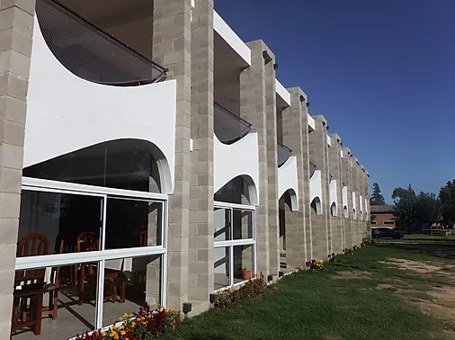
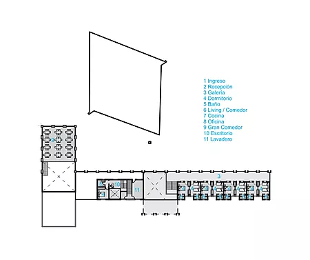

Obras Institucionales

Casa del Peregrino
- Localización: Villa Cura Brochero, Córdoba
- Construcción: 2016
- Superficie construida: 500 m2
- Superficie en cosntrucción: 1000 m2
- Proyecto: Arq. Federico Ochoa
- Tipo: Obra finalizada
Casa de acogida y oración, es un espacio destinado a recibir y albergar a los peregrinos que llegan a Villa Cura Brochero.
Una fusión entre historia y contemporaneidad, entre tradición e innovación es la imagen de una iglesia que acompaña y protagoniza el desarrollo cultural actual, y que, al mismo tiempo, mantiene un fuerte vínculo con sus raíces.
